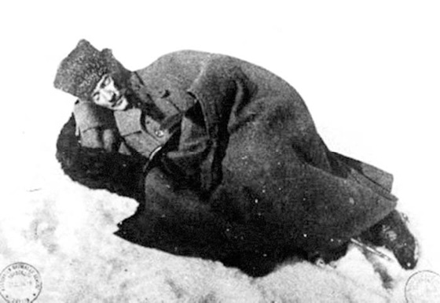

Daha fazla bakmadı ve gözlerini hayata kapadı. Yaşadığına tek kanıt, burun deliklerinden dökülen dumandı. Soğuğun dumanı. Soğuktan tüten, beyaz bir nefes. Örtmüştü kendini. Kalpağı, paltosu ve gözkapaklarıyla. Geceden kalma karın üzerinde bir kaya parçasıydı. Altına serilmiş kürk parçasına sığmak için dizlerini karnına çekmiş, katlanmıştı.
Yaveri Muzaffer yorgundu ve üşüyordu. Elinde İca Reflex bir fotoğraf makinesi, içindeyse, tuttuğu nefesi taşıyan Etem’e baktı. Oysa fotoğrafçının gözleri, ufku silip atmış beyazlığın içinde, simsiyah bir lekeye dönüşmüş olan yerdeki adama aitti. Ondan başka hiç kimseyi ve hiçbir şeyi görmüyordu. Çektiği fotoğraf, bunun kanıtıydı.
